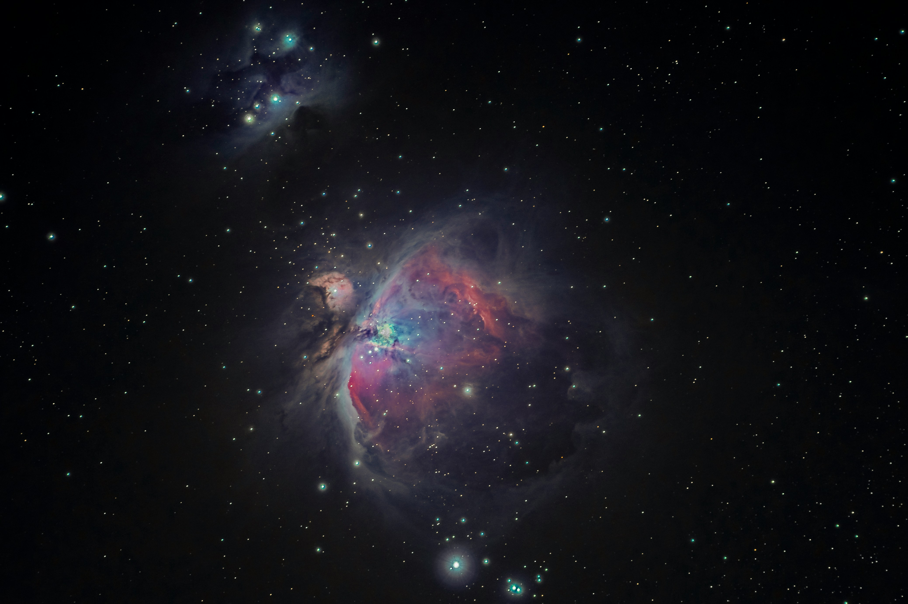

Humans have always looked towards nature for answers. Whether it’s through biomimicry, which aids us in product design, or utilising natural remedies for medicine, we have a long history of turning to nature for solutions to all sorts of problems. So it’s expected, nonetheless, that eventually we’d turn to the sky to help us figure out some of our more significant predicaments. And if there’s any issue which has weighed heavily on the minds of you and me — and philosophers from many millennia ago — it’s the idea of coming to terms with change.
We learn and understand from a young age that no matter what, things will change. The people around us are like a constant ebb and flow of moving tides; our interests shift and shape us as we grow, and the decisions we make set us on wildly different paths from what could have been. Yet, amongst all this exposure to a constantly changing world, it still remains one of the most difficult concepts for us to accept.
It’s no surprise that after spending thousands of years on Earth, human brains are wired for predictability. Early Homo sapiens were not strong, fast, or well-protected. They had no claws, fangs, or thick fur like most animals had at the time. Conditions were harsh and cold, and the human population found itself struggling to compete against predators. They also had weak night vision and a very limited sense of smell, so detecting threats was a difficult and inefficient task. However, due to their lack of features that would provide evolutionary advantages, humans had to rely on using the resources around them, such as fire and flint tools. Not only did this allow them to survive the rough conditions of the time, it also allowed their brains to develop far more complexly than most creatures.
This complexity was honed into social intelligence — the type of intelligence that allows us to grasp ideas such as change and its inevitability. The brain’s development also wired humans to rely on predicting the future. Every second, the brain compares what it expects to happen with what actually happens — a process known as predictive processing. We feel safe when what we expect happens, and so when change ensues, the brain experiences uncertainty, which it converts into a feeling of danger. Biologically, change activates the amygdala, which then triggers a stress reaction. Adrenaline and cortisol are fired through your neurons, preparing you for the “fight or flight” response.
Habits are also another favourite mechanism of the brain because they consume little energy. Patterns are stored in the basal ganglia and repeated automatically when a task is begun. But when change occurs, new neural pathways have to be created. More mental energy and attention are required for this, and so the brain naturally resists unless it is essential.
From a psychological perspective, humans also oppose change. The mind likes to form emotional attachments not just to people, but also to routines and environments. This is why change creates anxiety, even if it’s a good one. When it happens, we mourn what was lost, and this often creates a feeling of negativity even if we later come to realise that the change was necessary to facilitate better things.
Humans also love control. However, if control is our shield, change is the sword being bared against us. It strips us of our stability and challenges the ego — something we treat as permanent and undefiable.
Socially, change is something that makes us vulnerable. It threatens belonging. Humans evolved in tribes, and in early history, being excluded meant death since food and protection were a result of team effort. So even today, while the consequences may not be as life-threatening, the idea of not belonging in a group causes us to feel scared and even experience physical pain.
Our identities are what anchor us. We all have social roles which we like to abide by, and changing ourselves could risk us losing those roles. We don’t like it when others’ perceptions of us change, so we try to keep things as constant as we can. Our habit of social mimicry also allows us to maintain harmony as a society. But by changing, we may break that mirror — which once again threatens our “place” in our communities.
Yet, even while we defy change so much, our brains are tremendous. They have this amazing feature of neuroplasticity, which allows the brain to override natural instinct and become more sensitive to local rewiring through the experiences we personally face. Without this ability, our intelligence and emotions would cause us to cling to past versions of ourselves — versions that would become outdated and difficult to manage in new circumstances, whether biologically or emotionally.
So, you must be wondering by this point how change is related to the stars. Well, it turns out that the life cycle of stars tells us a lot about transformation and how it is one of the most natural things observed across the entirety of the Universe. If you think the changes that you experience in your life are massive, you’re in for a surprise — because now you’re about to discover change on an astronomical scale.
Stars are born in vast clouds of gas and dust called nebulae. Slight inconsistencies in density cause the formation of gravitational fields, which pull in more matter. The particles continue to collapse inward, and the pressure and temperature rise greatly until nuclear fusion can be sustained (usually well above ten million Kelvin). Hydrogen begins to fuse into helium in the core, and a protostar is formed.
Most of a star’s life is spent in the main sequence stage. Outward pressure from fusion in the core maintains a perfect and precise balance against the inward pull of gravity. As hydrogen begins to run out, fusion slows down, and gravitational pressure overcomes the outward pressure, so the star begins to collapse and its core contracts. The outer layers expand and cool, and depending on its size, it becomes either a red giant (for stars similar in size to our Sun) or a supergiant.
Small stars completely lose their outer layers as they drift into space, leaving an exposed core called a white dwarf. Massive stars have their cores collapse so far that their temperature rises once again to support fusion for a short amount of time. Heavier elements are fused during this period. The outer layers begin to fall inward and rebound on the dense core, creating an explosion known as a supernova. The core may then go on to become a neutron star, or if it is of even greater mass and the Chandrasekhar limit is overcome, then the electron degeneracy pressure is not enough to prevent total collapse of the core — resulting in the formation of a black hole.
The scattered contents of the stars become the womb of a new generation of stars and planets.
Like stars, humans are born and often experience a period of stability in childhood where everything is provided for. This period of life seems endless — until it isn’t. Suddenly, we’re plunged into an oncoming adulthood where we are somehow both restricted and yet not given enough direction. This stark change often causes distress. Whether it be financial worries or thoughts about career paths, family, or relationships — growing up brings a multitude of changes.
And as stars change drastically from their main sequence selves, so do humans. They burn out, collapse, and find themselves in places of darkness. But it is at these points where transformation becomes indisputable. Supernovas create new stars — and change creates new versions of ourselves.
In physics, the Second Law of Thermodynamics tells us: “All systems tend toward disorder — entropy increases.” Yet, in the midst of all this chaos, local order also arises. Change is the universe’s way of conserving meaning through transformation, not permanence.
Across the history of mankind, many figures have highlighted the importance of change in the natural order. Heraclitus (500 BC) said, “No man steps in the same river twice.” This shows how existence is always in motion. In Buddhist beliefs, Anicca refers to the impermanence of all conditioned things. Whether this involves physical processes such as the constant decay and reformation of atoms or the recreation of a person from their own mistakes, all things are transforming.
Another prominent philosopher, Nietzsche, mentions eternal recurrence, which describes the cyclical pattern observed in everything. Change isn’t about loss — it’s about continuity through transformation.
The Law of Conservation of Energy states that “energy can neither be created nor destroyed, only transferred or stored.” The law applies directly to all physical systems but also works very suitably in a psychological sense. Our psyche and spirit are never quite destroyed; we are simply reorganised into different versions of ourselves through change. Everything must transform — it’s something that’s observed everywhere.
But transformation isn’t a bad thing, and it’s definitely not something that can be held back. Our cells are constantly renewed every second, and our brain is never the same in any given moment. Even if you met the same person twice, you wouldn’t experience the same version of them again.
While change may never feel easier, no matter how many times you’re exposed to it, accepting it so that it doesn’t hurt as much each time is possible. Like the stars, many versions of you will die and be reborn — all for the purpose of continuing the best expression of yourself forward.